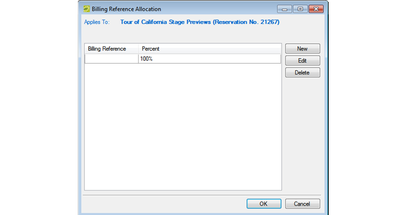

-
Navigator Overview
This section provides an overview of opening a reservation in the Navigator, the Navigator's layout and folder structure, and the commands that are available in the Navigator.
Opening a reservation in the Navigator
After you create a new reservation using the Reservation Wizard, the reservation opens automatically in the Navigator. You can also manually open the Navigator by:
- Selecting a reservation, booking, or service order to open directly in the Navigator. See "Opening a reservation directly in the Navigator" below.
- Opening a reservation through the Reservation Book. See "Opening a reservation through the Reservation Book".
- Opening a reservation through a group. See "Opening a reservation through a group".
- Opening a reservation through a search. See "Opening a reservation through a search".
- On the toolbar, click the Navigator icon to open the Open Navigator dialog box.
- On the Open drop-down list, select the item that you are opening—reservation, booking, or service order.
- Do one of the following:
- In the No. field, enter the number for the reservation, service order, or booking, and then click OK.
- To enter the last reservation, booking, or service order that you made during your current or last
Note: If you do not know the reservation number, you can search for the reservation. On the Open Navigator dialog box, click Browse to open the Browser.
Open a reservation through the Reservation Book
On the toolbar, click the Book icon to open the Reservation Book, and then in the Reservation Book, double-click a booking for the reservation to open the reservation in the Navigator. See "Viewing and Editing Reservations in the Reservation Book".
Open a reservation through a group
You can search for a reservation for a group and open the reservation in the Navigator from the group-specific window. See "Working with Reservations for a Group".
Opening a reservation through a search
You can search for a reservation using the Browser, the Web Reservation Tool, and/or the Calendar, and then double-clicking the search result entry to open the reservation in the Navigator. See "Search Tools".
Note: You can also click Browse on the Open Navigator dialog box to open the Browser search tool.Layout and Folder Structure
The Navigator has three panes—a left pane, a top right pane, and a bottom left pane. The left pane displays a selected reservation, all the bookings for the reservation, and the details for each booking in a Windows Explorer-style folder structure. The top-level folder is the reservation folder. The folders that are located beneath a reservation folder are the booking folders. The folders that are located beneath a booking folder are the booking detail folders. The top right pane of the Navigator displays different tabs and options depending on the folder or item that is selected in the left pane of the Navigator. The bottom right pane of the Navigator functions just like a browser window (see "Getting Started with EMS"), and it also displays different information and options depending on the folder or item that is selected in the left pane.

Reservation folder
A reservation folder contains the who and the what information for the reservation. When you select a reservation folder in the left pane of the Navigator, the reservation number is displayed in the title bar of the Navigator, and the following tabs are displayed in the upper right pane of the Navigator:
•Reservation Summary tab—The Reservation Summary displays information about the selected reservation, including the event name, the group for which the reservation was made, the group contact name, the group contact phone number, and the reservation number.
• Properties tab—The Properties tab displays not only the same information as the Reservation Summary tab, but also information such as the event type, the second group contact, the date that the reservation was added, the date that the reservation was changed, and so on.
• Billing Reference Allocation tab—By default, the charge for a reservation is allocated to a single billing reference number. On the Billing Reference Allocation tab, you can allocate the charge for a reservation to multiple billing reference numbers by percentage. See "To allocate charges to multiple billing reference numbers and/or PO numbers".
Tip: Your
• PO Number Allocation tab—By default, the charge for a reservation is allocated to a single purchase order (PO) number. On the PO Number Allocation tab, you can allocate the charge for a reservation to multiple billing PO numbers by percentage. See "To allocate charges to multiple billing reference numbers and/or PO numbers".
Tip: Your {{product}} administrator must enable the Use PO Number Allocation parameter for this tab to be displayed. See {{product}} System Parameters in the {{product}} Setup Guide.• Reminders tab—The Reminders tab displays any reminders that were created for the selected reservation. See "Working with Comments and Reminders in the Navigator".
• Comments—The Comments tab displays any text entries that were made for the selected reservation. See "Working with Comments and Reminders in the Navigator".
• Attachments tab—The Attachments tab displays any attachments (files) that have been saved with the reservation. See "Working with Attachments in the Navigator".
• User Defined Fields—The User Defined Fields tab displays the additional fields that store custom data for a reservation. Your {{product}} administrator configures the types of fields that are available as well as the allowed values for these fields. See "Working with User Defined Fields in the Navigator".
• Transactions—The Transactions tab displays any invoices that were generated for the selected reservation or any payments that were applied to the selected reservation. See "Billing," for detailed information about invoices and other financial transactions in {{product}}.
• History tab—The History tab displays the history for the reservation—the date that a change was made to the reservation, the ID of the user who made the change, the field that was changed, the old field value, and the new field value.
• Emails tab—The Emails tab displays any summarizing information for any emails that were sent via SMTP to the group for whom the reservation was made. See "Sending Email from EMS".
Also, when you select a reservation folder:
• All the tabs in the upper pane of the window have some of the basic features of an {{product}} browser window. You can change the width of the data columns, you can sort the data columns on a tab in either ascending or descending sort order, and you can rearrange the column order by dragging a column to a new location using the column heading. See "An EMS Browser Window".
• The bookings for the selected reservation are displayed in the Bookings pane (the lower right pane) of the Navigator. The colored rectangle to the left of a booking indicates the booking's status. If a booking has been canceled, a Canceled icon is displayed on the booking folder in both the Reservation (left) pane and the Bookings pane.
• You can right-click in the upper pane and open a context menu with options for emailing the group for which the reservation was made, or the first contact for the group.
To allocate charges to multiple billing reference numbers and/or PO numbers
Tip: The following procedure details how to allocate a reservation charge to multiple billing reference numbers; however, by analogy, you can follow this procedure to allocate booking charges or booking detail charges to multiple billing reference numbers and/or PO numbers.- For a selected reservation, open the Billing Reference Allocation tab, and then click Edit. The Billing Reference Allocation dialog box opens. By default, when this dialog box first opens, it displays the charge for the reservation allocated 100% to a single billing reference number placeholder.

- Select the billing reference number placeholder, and then click Edit. The Split Billing Add dialog box opens.

- Do one of the following:
- Enter the billing reference number to which you are allocating the reservation charges, and then click OK. The Split Billing Add dialog box closes. You return to the Billing Reference Allocation dialog box with the newly added billing reference number allocated at 100%. Continue to Step 5.
- Click the Search icon to open a Billing References dialog box, and then do one of the following:
- Select a billing reference number from the list, click Select, and then click OK.
- In the Find field, enter a search string, and then click Display to display a list of all billing reference numbers that meet your search criteria. Select the appropriate billing reference number from the search results, click Select, and then click OK.
- The Billing References dialog box closes. You return to the Split Billing Add dialog box with the selected billing reference number displayed in the dialog box.
- Click OK. The Split Billing Add dialog box closes. You return to the Billing Reference Allocation dialog box with the selected billing reference number allocated at 100%.
- Do one of the following:
- To allocate the reservation charges to only this single billing reference number, click OK. The Billing Reference Allocation dialog box closes and you return to the Navigator. The newly added billing reference number, allocated at 100%, is displayed on the Billing Reference Allocation tab.
- To allocate the reservation charges to multiple billing reference numbers.
- Click New. The Split Billing Add dialog box opens.
- Do one of the following:
• In the Billing Reference field, enter a billing reference number., and then click OK.
• Click the Search icon
to open a Billing References dialog box, and then do one of the following:
• Select a billing reference number from the list, click Select, and then click OK.
• In the Find field, enter a search string, and then click Display to display a list of all billing reference numbers that meet your search criteria. Select the appropriate billing reference number from the search results, click Select, and then click OK.
Your search is limited to the exact order of the characters in the string, but the string is not case-sensitive, and it can appear anywhere in the search results. For example, a search string of 445 returns both 123.445.678 and 445.678.123.
The Split Billing Add dialog box closes. You return to the Billing Reference Allocation dialog box with each of the newly added billing reference numbers displayed with a 0% allocation.
8. Repeat Step 6 and Step 7 until you have added all the needed billing reference numbers.
9. For each new billing reference number, double-click in the Percent field to select the percent, and then change the percent to the appropriate value.
The percentages must add up to 100%.
10. Click OK to close the Billing Reference Allocation dialog box and return to the Billing Reference Allocation tab. All the billing reference numbers and their percent allocations are displayed on the tab.
Booking folder
Booking folders contain the where and when information for the reservation. If you can expand a booking folder, this indicates that details have been added to the booking. The booking details for the selected booking are displayed in the Booking Details pane (the lower right pane) of the Navigator. A green background for a booking detail folder indicates that one or more booking detail items have been invoiced for the booking.
When you select a booking folder in the left pane of the Navigator, the booking number is displayed in the title bar of the Navigator, and the following tabs are displayed in the upper right pane of the Navigator:
• Booking Summary tab—The Booking Summary displays information about the selected booking, including the event date, the reserved time, the event time, and so on. If you use Outlook as your email program, you can do the following from this tab:
• To add the selected booking to your personal calendar, click Outlook > Add to Personal Calendar.
• To send invitations for the meeting to one or more contacts in your Outlook Address Book, click Outlook > Send Invitation.
• Properties tab—The Properties tab displays not only the same information as the Booking Summary tab, but also information such as the event type, the setup count, the date that the booking was added, the date that the booking was changed, and so on.
• Billing Reference Allocation tab—By default, the charge for a booking is allocated to a single billing reference number. On the Billing Reference Allocation tab, you can allocate the charge for a booking to multiple billing reference numbers by percentage. See "To allocate charges to multiple billing reference numbers and/or PO numbers".
Your {{product}} administrator must enable the Use Billing Reference Allocation parameter for this tab to be displayed. See {{product}} System Parameters in the {{product}} Setup Guide.
• PO Number Allocation tab—By default, the charge for a booking is located to a single purchase order (PO) number. On the PO Number Allocation tab, you can allocate the charge for a reservation to multiple billing PO numbers by percentage. See "To allocate charges to multiple billing reference numbers and/or PO numbers".
Your {{product}} administrator must enable the Use PO Number Allocation parameter for this tab to be displayed. See {{product}} System Parameters in the {{product}} Setup Guide.
• Reminders tab—The Reminders tab displays any reminders that were created for the selected booking. See "Working with Comments and Reminders in the Navigator".
• Attachments—The Attachments tab displays any attachments that were saved with the booking. See "Working with Attachments in the Navigator".
• Comments—The Comments tab displays any comments that were made for the selected booking. See "Working with Comments and Reminders in the Navigator".
• Drawings—The Drawings tab displays a list of files that were attached to the selected booking. See "Working with Drawings in the Navigator".
• History—The History tab displays a list of changes made for the selected booking—the date the change was made to the booking, the user who made the change to the booking, and information (field) that was changed for the booking.
Also, when you select a booking folder, all the tabs in the upper pane of the window have some of the same basic features of an {{product}} browser window. You can change the width of the data columns, you can sort the data columns on a tab in either ascending or descending sort order, and you can rearrange the column order by dragging a column to a new location using the column heading. See "To group data by columns in an EMS Browser window" and "" on page 39.
Booking detail folder
If you can expand a booking folder, this indicates that details have been added to the booking. Booking details, which are also called categories, are the services (catering, A/V equipment, and so on), notes, attendees, activities, and room charges that you can add to a booking.
Booking detail folders and booking detail items are discussed in "Booking Details and Items Overview".
Navigator commands
The Navigator has two constant commands in the upper left hand corner—Open Reservation and View Alerts and three constant commands in the upper right hand corner—Print, Refresh, and Settings.
Command
Description
Open Reservation
Allows you to open and work with multiple reservations in the same Navigator session. See "Opening a reservation directly in the Navigator".
View Alerts
Open and view any alerts that have been generated for the selected reservation, booking, or a booking detail that is a service order or catering category.
Print
• Printing an invoice or a confirmation at the reservation level. See "Confirmations".
• Printing the Setup Worksheet for Reservation report, the Service Orders report, and the Banquet Event Order report. See "Reports and Queries".
• Printing the Transaction report. See "Generating an EMS Billing Report".
• Printing the history of a reservation, all its bookings, and all its booking detail items.
Refresh
For refreshing the Navigator display based on the settings that you have specified in the Navigator Options dialog box. See "Navigator Options dialog box".
Settings
• Options—Opens the Navigator Options dialog box in which you can specify such things as what is to be displayed in the Navigator, mouse actions in the Navigator, and so on. See "Navigator Options dialog box".
• Confirmation Settings—Opens the Confirmation Settings dialog box which provides a variety of options that you can specify for manual and automatic generation of a confirmation for a reservation or a booking. See "Confirmations".
All other navigator commands are available as buttons in the upper right pane and lower right pane of the Navigator.
Navigator Options dialog box
The Navigator Options dialog box has three tabs—General, At A Glance, and Highlight Categories.
General tab
General tab—On the General tab, you select the options for such things as which types of bookings to show in the Navigator (old bookings and/or canceled bookings), the result of double-clicking a listed folder (opens the item or expands the folder), the booking time that is displayed (reserved time or event time), and the highlight color for invoiced items.
Navigator Options dialog box, General tab
Field
Description
General
Show Old Bookings
Show bookings in the Navigator that occurred before the current day's date.
Show Cancelled Bookings
Selected, show bookings in the Navigator with a canceled status.
Show Wizards in Tools menu
Show all on the Tools menu in the Bookings pane. If cleared, show only the "Wizards" option, which you must click to open a form from which you can select a tool.
Show Deleted Items
Show all deleted items (bookings, deleted resource items, and so on) for a reservation in the Navigator.
Hide Empty Tabs
Hide the tabs that do not have any data displayed on them for a selected reservation, booking, or booking detail.
Double-Clicking a Listed Folder
Opens the item
Opens the item for editing.
Expands folder
Opens the next level of folders.
Wizard Results
Always Show
Show a confirmation of all changes, regardless if they were successful, on a Wizard Results page.
Show Unchanged Only
Show only those changes that were not successful on a Wizard Results page.
Confirmation
Always prompt
When you click Confirmation, opens a Confirmation filter which you can use to change the default filter options for a confirmation before generating it.
Print Preview
When you click Confirmation, opens an onscreen preview of the confirmation.
Email
When you click Confirmation, opens an email of the confirmation.
Print
When you click Confirmation, prints an immediate confirmation.
Booking Display Time
Reserved Time
Show the total time for which the space is reserved. This time is the event time plus the setup/teardown times.
Event Time
Show only the event time for which the space is reserved.
Invoiced Items
Highlight Color
The color with which invoiced items are highlighted in the Navigator window.
Service Orders
Show Pricing
Show pricing on a service order.
Show Item Notes
Show item notes on a service order.
Show Item Special Instructions
Show special instructions for items on a service order.
Highlight Changes Made Within (days)
Highlight any changes that have been made to a service order within the specified number of days.
Footer Message
Show reconfigured blocks of text that appear in footer of a service order (for example, a Cancellation policy).
Booking Edit
Auto Adjust Reserved Time When Event Time is Changed
If the reservation includes setup and/or teardown times, then automatically adjust the total time for the reservation (the event time plus the setup/teardown time) when the event time is changed.
At A Glance tab
On the At A Glance tab, you specify whether reminders, comments, attachments, and so on are to be displayed in the left pane of the Navigator when a reservation folder, booking folder, booking detail folder, and/or booking detail item is opened.
Navigator Options dialog box, At A Glance tab
Highlight Categories
On the Highlight Categories tab, you indicate whether a checkmark is to be displayed on all booking detail item folders for the selected booking detail. The default is to Highlight All, which means every booking detail item folder for every booking detail is denoted with a checkmark.
Navigator Options dialog box, Highlight Categories tab
Other Navigator commands
All other Navigator commands are available as buttons in the upper right pane and lower right pane of the Navigator. The buttons that are available are dynamically updated based not only on the folder or item that is currently selected in the left pane of the Navigator, but also on the tab that is open in the upper right pane of the Navigator.
Buttons available in the Navigator window with a reservation folder selected
Buttons available in the Navigator window with a booking folder selected
Buttons available in the Navigator window with a booking detail folder selected
Many of these same commands are also available on a context menu, which is a menu that opens when you right-click on a folder or item in the Navigator. All the context menus that are available in the Navigator offer a limited set of choices based on the folder or item that is selected in the Navigator.
Page tags: article:topicpersona:User